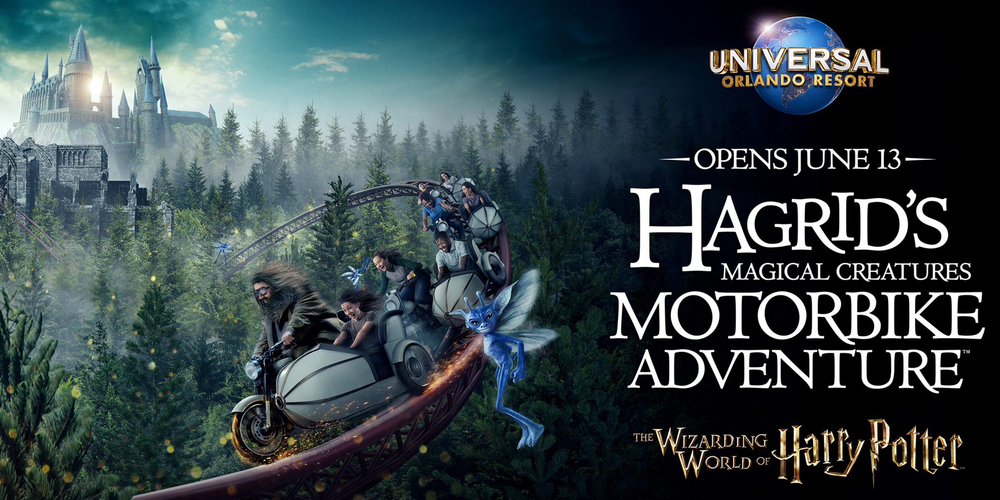

<html>
    <head>
    <title>DMS 321 Midterm: "My vacation at Universal Studios"</title>
    </head>
    <body>

    </body>
</html>

<h1>Universal Orlando Harry Potter Ride: My Dad's Favorite</h1>

</p>

<h1>How did the ride operate?</h1>

<h1>This ride was way better than I expected! It was extremely fun! The idea behind the ride was we were being driven around in motorcycles by Hagrid from the Harry Potter franchise. Every car was a bike with a side car. Two passengers per motorcycle. I really wanterd to ride the main motorcycle as it had the handles and other really cool motorcycle like characteristics. Unfortuantely my dad could not fit in the side car, for safety reasons I sat in the side car, which wasn't really bad at all. It was nice, and it was like we were driving around together.</h1>

<video wdith = "400" height ="400" controls>
    <source src= "HR.mp4" type="video/mp4">
</video>

<h1>How fun/exciting was the ride?</h1>
</p>
<h1>The line was extremely long. Regardless, it was worth it! We were zipping around the track on our motor bikes as various hazards appeared throughout the ride. Creatures and at one point I remember there being flames, as we dodged through those various hazards. The speed was wild, I was not expecting the ride to go that fast. One of the better parts of the coaster, was we eventually got to a point where there were no more tracks. The coaster came to a stop with some words from Hagrid, as we started to decend really fast, backwards! The ride came to an end and we ended up ridding it like 3 more times after that, definitly one of the better rides, it was incredible!</h1>


</p>
<h1><a href="index.html">Previous page.</a> <a href="page3.html">Continue the story.</a></h1>

